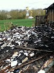
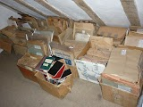
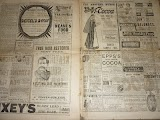
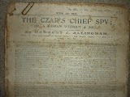

 |
| The morning after, with the cable repair in progress |
‘I Took My Life and Threw It on the Skip’
Poem by James Fenton
Francis Wheen remembers meeting James Fenton in the early 1980s in a state of high excitement. He’d just found an Adana printing press on a skip in the Gray’s Inn Road …
The morning after the night before did not bring quiet sorrow. An employee from the National Grid called early. They had been searching for a break in a main power cable. Somewhere, 10,000 volts was pouring into the ground. Their search had led them to our house.
On the previous night (Friday 13th for the
superstitious) the two rooms and roof space that contained my partner Francis
Wheen’s current and past writing; his letters, articles, books and CDs collected
over forty years, had burned down, with a sudden and shocking thoroughness. Now, our grief at what had been lost was moderated by a realisation that we were
lucky, all of us, to be alive. One end of the severed cable was dangling
directly into the area where the fire brigade had set up a small table for the cups of tea and chocolate digestive biscuits we had
carried out to them: the other was in the open field where the teenage children
had migrated for an alternative view of the conflagration.
A forensic investigator was soon on the scene. Diligent,
painstaking and intelligent he tramped the site, removed samples of attenuated
cable and took both Francis and I repeatedly though our memories of what had
happened. I expected that at any moment he would read us a caution or shut us
into separate rooms to guard against collusion. The timing of Francis’s 999
call was checked against the time that the fault alarm had been registered at
the electricity sub station some seven miles away. There were only minutes
between the two events but sufficient for the supply company to reassure
themselves that our fire had caused their cable to part and not vice versa. It
was possible, said the investigator,
that our insurance company might want to send out their own forensic
team. Meanwhile he shared our assumption (and that of the fire-brigade) that
the fire had begun somewhere in the array of IT equipment on and around
Francis’s desk.
IT equipment generates heat, heat ignites paper. Or maybe
some philistine army of rodents had gnawed through the cabling, like the knights
of the Fourth Crusade who looted and burned the Imperial Library of
Constantinople in 1204. Or the Mongol invaders who destroyed Baghdad’s House of
Wisdom in 1258 – making the waters of the Tigris ‘run black with ink’. Francis
remembers being present in 1981 immediately after the Tamil library at Jaffna,
Sri Lanka, had been destroyed by the Singalese in a deliberate act of cultural
vandalism. He's hoping that the article in which he recorded his impressions is preserved somewhere in the files of the Guardian.
| Third of the skips that are taking away the record of a life -- so far. |
The destruction of a library – or a lifetime time’s work (to
date) – is a pivotal event. In Francis’s case I’m guessing that Friday April 13th
2012 will be felt as a demarcation point on many different levels – not least
his (and our) attitude to paper. The neatly stacked print-out of his
novel-in-progress could not ensure its survival any more than the back-up copy
on the memory stick in his desk drawer. Cue: sudden family conversion to remote forms of storage. I use
Dropbox: He is now emailing every day’s new work to a location somewhere in the
vaults of the Google Empire.
But how secure is this? Or how permanent? And how permanent
do we expect or want it to be? One of my private anxieties about publishing in
electronic formats is that, as soon as technology moves on, work published for
today’s e-readers will become inaccessible as these particular devices are
superseded. I look at the gutted heap of PCs and laptops Francis had preserved
so faithfully since his first purchase of an Amstrad in 1986 and they tell
their own tale of obsolescence. Perhaps, in the future, our 2012 ebooks will be
able to be re-mastered into new formats, like the breathtakingly emotive series
of Bach Cantatas recorded in Berlin 1949 – 1952 by RIAS (Radio In the American
Sector) and now re-released by Archiv. (My belated birthday gift to myself.) At Authors Electric we are independent writer-publishers. These ebooks are so purely
our own property. There’s no copyright library where we can deposit our files
for enlightened generations to come. Will Google Books provide
our permanence?
| Some burned laptops |
Either electronic storage is a mess, or I am confused. I
read Debbie Bennett’s recent comments about the unwelcome permanency of blogs.
I’ve heard people’s irritation that details supposedly removed from Facebook
resurface unexpectedly. Yet I’ve also gone to retrieve cached articles to
discover they are no longer there and I listened, recently, to a friend who was in the forefront of IT analysis from the later
1970s to early 1990s. He had attempted an Internet search to reacquaint himself with the history
of his own generation, to discover that there was almost nothing electronically
saved. “It’s in no-one’s interest to maintain archives,” he said. “There’s no
responsibility beyond the commercial.” (Cally Phillips’s Brand Loyalty
will have a view, I’m sure.)
 |
| The record of Herbert Allingham's working life (fl 1886 - 1936) |
I cleared an attic to make a new place for Francis to work.
I was ruthless with the heaps of paper that had accumulated there. “Why should
you remain?” I asked my old tax records and OFSTED files, “when all Francis’s
letters from Michael Foot and Christopher Hitchens are gone?” One wall of boxes
remained undisturbed. The Herbert Allingham archive. These are papers that have
only survived because his daughters, Margery and Joyce, believed that their
father’s lifetime of unappreciated labour had a value.
I tremble for them. The penny periodicals that printed
Allingham’s long melodramatic serials are dying as surely than the back issues
of Private Eye which went up in the flames of April 13th. The 1880s,
when Herbert Allingham’s publishing career began, was the first decade in which
wood pulp became a significant raw material for British paper-making. In 1800
paper was still hand-made from rags; in the 1820s Fourdrinier machines devalued
the artisans, then the publishing entrepreneurs of the 1830s and 40s began importing
increasing quantities of esparto grass to bolster productivity as the
astonishing nineteenth century got underway.
“Paper was to the urban revolution what iron was to the
industrial revolution,” says Scott Bennett in ‘The Golden Stain of Time’, his
brilliant essay on periodical preservation. By 1851 Britain was the first
country in the world where more people lived in towns than in the countryside.
Paper became ubiquitous – for advertisements and announcements, for religious
evangelism and for wrapping food. As the move towards universal literacy
gathered pace, newspaper proprietors began buying larger areas of the Canadian forests.
 |
| Advertising pages from a 1901 edition of The Christian Globe,an evangelical penny newspaper founded in 1874 by Herbert Allingham's father |
By 1901 Britain imported
16,000 tons of rags, 194,000 tons of esparto and 448, 000 tons of wood pulp.
The cheapest papers, for the mass-market, took the least trouble to de-acidify
their products. They were ephemeral by design.
And so they have proved. Researchers into nineteenth and
early twentieth century periodicals become used to the scent of decomposition
in the stacks, to the petillation of toast-coloured fragments strewn beneath
the desk at the end of each days’ work. In 2008 15% of the total British
Library collection was deemed unusable due to deterioration. Some of the
cheapest papers for which Allingham wrote no longer exist in any repository. As
soon as Fifty Years in the Fiction Factory is finished, the sooner
Allingham’s archive gets out of my attic and into the controlled environment of a university library. And the
sooner I’ll sleep easy.
By Julia Jones
By Julia Jones
 |
| File copy for The Czar's Chief Spy a serial written for Yes and No - a very trashy, therefore very rare, penny paper of 1905 A note in Allingham's handwriting says 'Keep safe. This is the only copy.' |